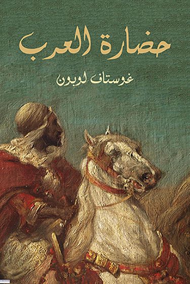

كتاب "حضارة العرب" للمؤرخ الفرنسي غوستاف لوبون، الصادر عام 1884، هو دراسة غربية رائدة تبرز المجد والإسهامات العربية والإسلامية في مختلف العلوم والفنون والآداب، ويغطي نشأة العرب، ودور الإسلام والقرآن، وتوسعهم الجغرافي (بغداد، قرطبة، القاهرة)، وإنجازاتهم في الطب والفلك والرياضيات، ويؤكد دورهم في نهضة أوروبا، ويفصل في عاداتهم ونظمهم، ويشرح أسباب عظمتهم وانحطاطهم.
نظرة منصفة: يقدم الكتاب رؤية غير مسبوقة من الغرب في عصره، حيث يحلل الحضارة العربية بموضوعية وتقدير، مبرزًا تفوقها على حضارات أخرى في فترة تاريخية معينة. مراحل الحضارة: يتتبع مسار العرب من عصور ما قبل الإسلام إلى العصر الذهبي، مرورًا بالفتوحات وتأسيس الدول في الشام والعراق ومصر والأندلس. الإنجازات العلمية: يركز على إبداع العرب في: الطب: تأسيس المستشفيات وتطوير العلاج. الفلك والرياضيات: إسهامات علماء مثل الخوارزمي والبتاني. الفلسفة والآداب والعلوم الطبيعية. دورهم في أوروبا: يشدد على أن العرب كانوا "أساتذة أوروبا" في مجالات عديدة، ونقلوا المعرفة وأثروا في نهضتها الحديثة. المجتمع العربي: يصف حياة البدو والحضر، والسياسات، وعادات وتقاليد المرأة، والأخلاق والدين. التحليل الشامل: يعتمد على منهج التحليل العلمي لاستعراض كل جوانب الحياة العربية، من البنية التحتية (العمارة، التجارة) إلى التأثير الحضاري العالمي. أسباب العظمة والانهيار: يناقش أيضًا أسباب ازدهار الحضارة العربية وانحطاطها.
يُعتبر مرجعًا أساسيًا لفهم الحضارة العربية من منظور غربي منصف. كشف عن مكنون الحضارة العربية وعلومها وفنونها وتأثيرها العالمي، وأثر في تغيير نظرة الغرب للحضارة الإسلامية.